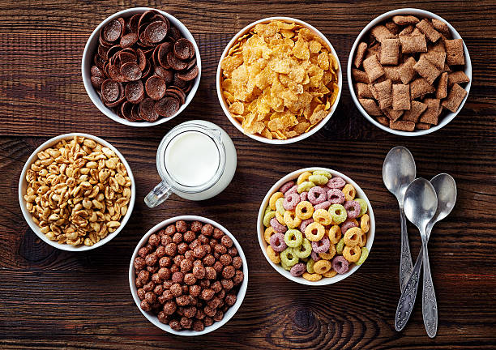

Cereal Recipe

Description
Cereal is a popular breakfast food typically made from
processed grains such as wheat, corn, oats, or rice. It
often comes in the form of flakes, puffs, or rings and is
usually sweetened or flavored with ingredients like sugar,
honey, chocolate, or fruit. Cereal is commonly eaten cold with
milk, yogurt, or a dairy alternative, though some people enjoy
it dry as a snack..
Ingredients
- Whole grain oats – provides fiber and a hearty texture
- Corn flour – adds crunch and bulk
- Sugar – gives sweetness
Steps
- Gather Ingredients – Collect all the cereal ingredients like oats, corn flour, sugar, and honey.
- Mix Dry Ingredients – Combine the oats, corn flour, sugar, and salt in a large bowl.
- Add Wet Ingredients – Stir in honey and any liquid flavors until evenly coated.